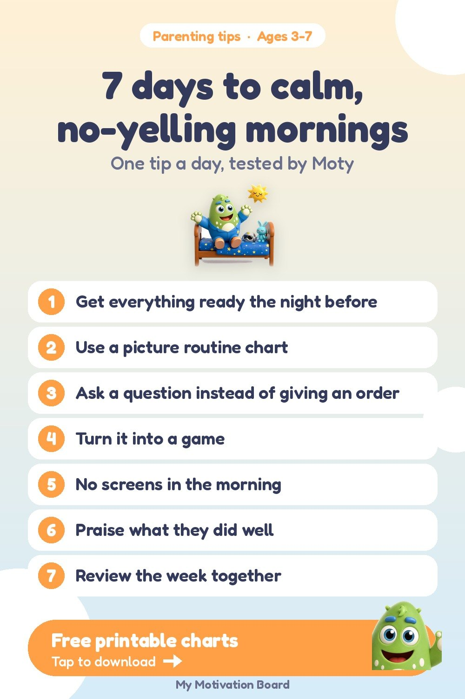

Ages 3-7
7 days to calm, no-yelling mornings
- Get everything ready the night before
- Use a picture routine chart
- Ask a question instead of giving an order
- Turn it into a game
- No screens in the morning
- Praise what they did well
- Review the week together